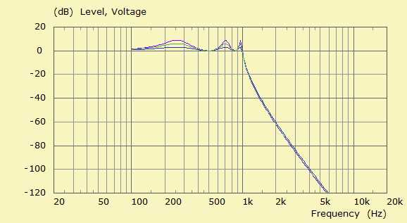

| Identifier | Ripple= |
| Units | dB |
| Format | Floating-point number |
| Purpose | Ripple of CH-alignment |
| Used in | Filter |

Ripple= belongs to the parameter-set of standard filter alignments.Ripple= controls the level of pass-band ripple of a Chebychev (CH) alignment. See also chapter Alignment Types. The above example displays amplitudes of Ripple=3dB, Ripple=6dB and Ripple=9dB. The order of the CH-lowpass is Order=6.